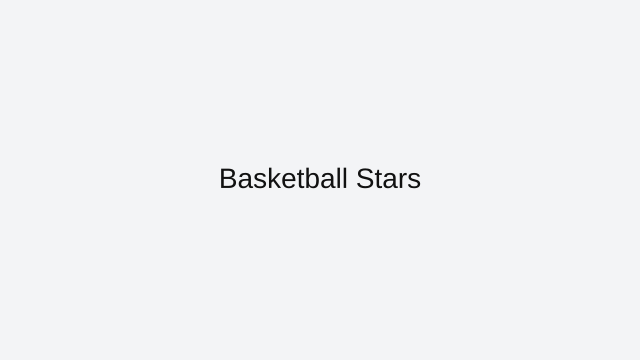

Basketball Stars is a browser-friendly basketball game on ArcadeZone that plays instantly in your web browser. This page explains the core rules, the best way to approach each session, and how to enjoy Basketball Stars without downloads or extra installs.
This browser version of Basketball Stars fits the category of sports games that are built for fast playing and repeat sessions. Sports games bring favorite athletics into the browser with intuitive controls and competitive action.
Controls are simple enough for quick games and satisfying enough for longer play. Most sports games use mouse control or simple key presses to manage moves and shots. You can play Basketball Stars on desktop or mobile, depending on the browser and the page version.
To improve in Basketball Stars, focus on the most important idea for the genre: basketball games often reward good timing, pattern recognition, and steady progress. This page also includes practical tips that help you find the right pace and avoid common mistakes while playing. If you enjoy basketball games, try Soccer Random, 8 Ball Pool, and Baseball Pro next. All of these are listed on the ArcadeZone All Games page for quick access.
ArcadeZone keeps this Basketball Stars page clean and easy to use, with a strong focus on playability and helpful guidance. Bookmark this page if you want faster access to Basketball Stars and other browser classics from the ArcadeZone collection.
Basketball Stars is featured here because it offers a polished browser experience with fast loading and easy access from any modern device.
This page also covers what makes Basketball Stars work well online and how to get the most out of every session.
When you want a quick game break, Basketball Stars delivers simple play mechanics and satisfying goals without distractions.
Each section on this page is designed to help you understand the controls, learn good strategy, and avoid common mistakes.
What you'll love
Instant browser access with no downloads or installations required.
Play competitive sports challenges that fit well in quick browser sessions.
A clean, mobile-ready page helps you learn the controls and start playing immediately.
Game essentials
Category: Sports
Game type: Basketball
Best for: competitive sports mini-games
Controls: use your keyboard, mouse, or touchscreen to play

Screenshot: Basketball Stars
How to play
Most sports games use mouse control or simple key presses to manage moves and shots.
Tips & Tricks
Master the timing for shots, passes, or swings to stay in control of the play.
Keep an eye on the entire field so you can react to opponent movement quickly.
Use the game’s practice mode or warm-up to get a feel for the controls before competing.
Play
If the game embeds elsewhere, link to the source or use an embed iframe with proper attribution.
ArcadeZone provides this page as a guide to Basketball Stars. Wherever possible, we link directly to the game’s browser-ready version and credit the original creators. If you want more browser game recommendations, visit the All Games page.